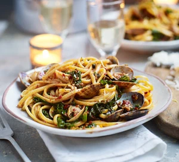

kale linguine

method
-
Pick over the clams and discard any that are damaged or stay open when pressed shut, then rinse them in cold water. Bring a large pan of water to the boil, add a pinch of salt and drop in the linguine. Cook for 1 min less than pack instructions.
-
Heat the oil in a large, lidded sauté pan over a medium heat. Add the nduja and cook for 3 mins, breaking up the sausage with the back of the spoon so that it melts into the oil. Stir in the garlic, cook until fragrant, then turn up the heat to high. Add the clams and kale, pour in the wine and put on the lid. Cook for 2-3 mins, shaking the pan occasionally, until the clams open and the kale wilts.
-
Remove any clams that aren’t open, then drain the linguine and toss through the sauce. Stir in the lemon zest and season well with black pepper. Serve immediately with parmesan and lemon wedges for squeezing.